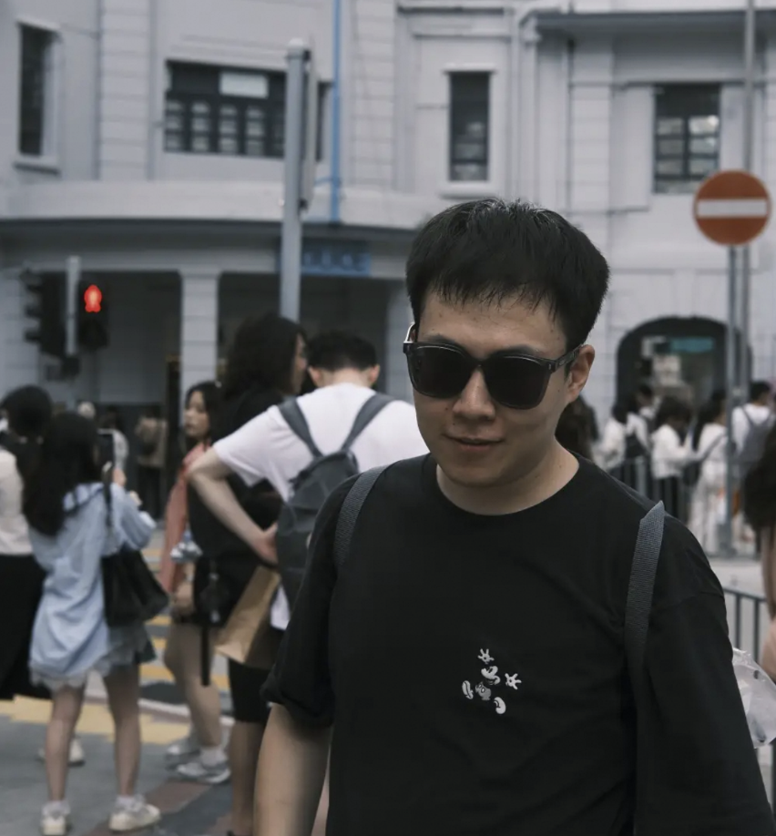

Chaoyang Zhang 张朝阳
Ph.D. Student
Xi'an Jiaotong University
Shanghai Innovation Institute
Shanghai, China
Email: zcyxjtu65@gmail.com

Biography
I am a third-year Ph.D. student in an integrated master's–Ph.D. program at Xi'an Jiaotong University, jointly trained with Shanghai Innovation Institute. I am advised by Prof. Qinghe Du, Prof. Weijie Ma, and Prof. Xiaohong Liu.
I received my bachelor's degree from Xi'an Jiaotong University in 2022 and pursued master's studies there from 2022 to 2024 under the supervision of Prof. Xi Chen, before transitioning to the Ph.D. phase in June 2024.
News
- One paper was accepted to ECCV 2026.
Publications
* Equal contribution.
-
FUMO: Prior-Modulated Diffusion for Single Image Reflection Removal
European Conference on Computer Vision (ECCV), 2026Co-first author
[Paper] [Code]BibTeX
@article{xu2026fumo, title={FUMO: Prior-Modulated Diffusion for Single Image Reflection Removal}, author={Xu, Telang and Zhang, Chaoyang and Zhai, Guangtao and Liu, Xiaohong}, journal={arXiv preprint arXiv:2603.19036}, year={2026} }Download .bib -
Improving Spectral CT Image Quality Based on Channel Correlation and Self-Supervised Learning
IEEE Transactions on Computational Imaging (TCI), 2023First student author
[Paper]BibTeX
@article{chen2023improving, title={Improving Spectral CT Image Quality Based on Channel Correlation and Self-Supervised Learning}, author={Chen, Xi and Zhang, Chaoyang and Bai, Ti and Chang, Shaojie}, journal={IEEE Transactions on Computational Imaging}, volume={9}, pages={1084--1097}, year={2023}, doi={10.1109/TCI.2023.3334488} }Download .bib -
S2MS: Self-Supervised Learning Driven Multi-Spectral CT Image Enhancement
7th International Conference on Image Formation in X-Ray Computed Tomography, 2022
[Paper] [arXiv]BibTeX
@inproceedings{zhang2022s2ms, title={{S2MS}: Self-Supervised Learning Driven Multi-Spectral CT Image Enhancement}, author={Zhang, Chaoyang and Chang, Shaojie and Bai, Ti and Chen, Xi}, booktitle={7th International Conference on Image Formation in X-Ray Computed Tomography}, volume={12304}, pages={1230425}, publisher={SPIE}, year={2022}, doi={10.1117/12.2647001} }Download .bib
Internships
-
–
Shanghai AI Laboratory
Shanghai, China
-
–
Shanghai Academy of AI for Science
Shanghai, China
Education
-
– Present
Xi'an Jiaotong University & Shanghai Innovation Institute
Integrated Master's–Ph.D. Program (Ph.D. Phase), Joint Training
Advisors: Prof. Qinghe Du, Prof. Weijie Ma, and Prof. Xiaohong Liu
-
–
Xi'an Jiaotong University
Master's Studies
Advisor: Prof. Xi Chen
-
–
Xi'an Jiaotong University
Bachelor's Degree